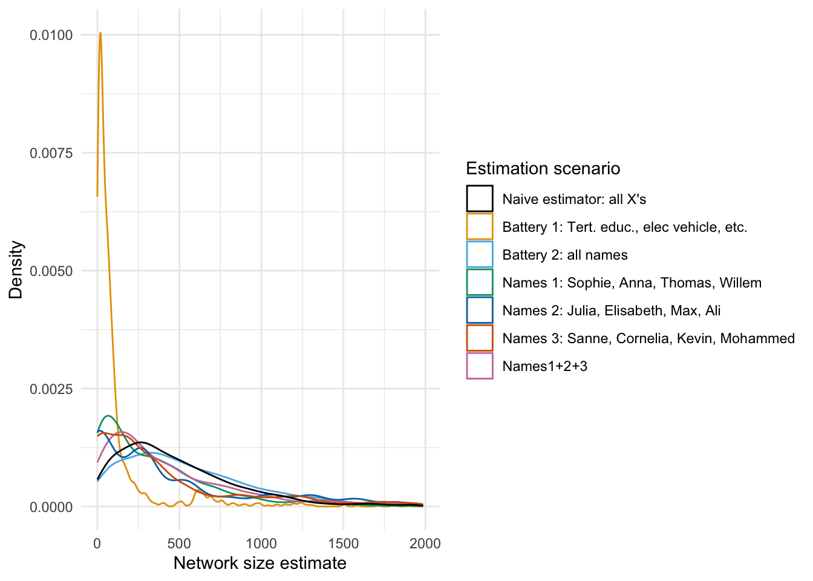

Last compiled on August, 2023
This is the code with which we make our dependent variables.
Start out with a custom function to load a set of required packages.
# packages and read data
rm(list = ls())
# (c) Jochem Tolsma
fpackage.check <- function(packages) {
lapply(packages, FUN = function(x) {
if (!require(x, character.only = TRUE)) {
install.packages(x, dependencies = TRUE)
library(x, character.only = TRUE)
}
})
}
packages = c("haven", "coda", "matrixStats", "parallel", "MASS", "doParallel", "dplyr", "cowplot", "tidyverse",
"naniar", "dotwhisker", "gt", "reshape2", "VGAM", "expss", "Hmisc")
fpackage.check(packages)#> [[1]]
#> NULL
#>
#> [[2]]
#> NULL
#>
#> [[3]]
#> NULL
#>
#> [[4]]
#> NULL
#>
#> [[5]]
#> NULL
#>
#> [[6]]
#> NULL
#>
#> [[7]]
#> NULL
#>
#> [[8]]
#> NULL
#>
#> [[9]]
#> NULL
#>
#> [[10]]
#> NULL
#>
#> [[11]]
#> NULL
#>
#> [[12]]
#> NULL
#>
#> [[13]]
#> NULL
#>
#> [[14]]
#> NULL
#>
#> [[15]]
#> NULL
#>
#> [[16]]
#> NULLrm(packages)
load("data/dutch_netsize_analyses.rda")The code below generates the descriptive values which are used for Tables 1 and 2.
# descriptive table not automated: TABLE 1
table(df$work)#>
#> 0 1
#> 583 666psych::describe(df$work)#> vars n mean sd median trimmed mad min max range skew kurtosis se
#> X1 1 1249 0.53 0.5 1 0.54 0 0 1 1 -0.13 -1.98 0.01psych::describe(df$hhsize)#> vars n mean sd median trimmed mad min max range skew kurtosis se
#> X1 1 1249 2.13 1.12 2 1.98 1.48 1 8 7 1.34 2.26 0.03table(df$income)#>
#> 1 2 3
#> 627 440 182# 1 < modal 2 > modal 3 unknown
psych::describe(df$leeftijd10)#> vars n mean sd median trimmed mad min max range skew kurtosis se
#> X1 1 1249 5.18 1.69 5.6 5.24 1.78 1.8 8.8 7 -0.3 -1.05 0.05table(df$migr3)#>
#> 1 2 3
#> 1131 62 56# 1 Maj 2 west 3 nonwest
table(df$woman)#>
#> 0 1
#> 609 640psych::describe(df$woman)#> vars n mean sd median trimmed mad min max range skew kurtosis se
#> X1 1 1249 0.51 0.5 1 0.52 0 0 1 1 -0.05 -2 0.01table(df$opl)#>
#> 3 1 2
#> 644 292 313# 1 prim/sec 2 lower tert 3 higher tert
psych::describe(df$neighdens)#> vars n mean sd median trimmed mad min max range skew kurtosis se
#> X1 1 1249 1.88 1.62 1.49 1.62 1.11 0.01 10.69 10.68 1.95 5.13 0.05psych::describe(df$worthhouse)#> vars n mean sd median trimmed mad min max range skew kurtosis se
#> X1 1 1249 2.67 0.89 2.54 2.58 0.73 0.95 9.96 9.01 1.75 7.12 0.03class(df$work)#> [1] "numeric"class(df$hhsize)#> [1] "numeric"class(df$leeftijd10)#> [1] "numeric"class(df$woman)#> [1] "numeric"# this is for the correlation table
df$educ3 <- df$opl
df$educ3 <- as.numeric(as.character(df$educ3))
rcorr(as.matrix(df[, c("work", "hhsize", "leeftijd10", "woman", "educ3", "neighdens", "worthhouse")]),
type = "pearson")#> work hhsize leeftijd10 woman educ3 neighdens worthhouse
#> work 1.00 0.14 -0.39 -0.06 0.26 0.08 0.11
#> hhsize 0.14 1.00 -0.26 0.04 0.08 -0.11 0.06
#> leeftijd10 -0.39 -0.26 1.00 0.00 -0.32 -0.27 0.04
#> woman -0.06 0.04 0.00 1.00 -0.05 -0.01 0.06
#> educ3 0.26 0.08 -0.32 -0.05 1.00 0.17 0.14
#> neighdens 0.08 -0.11 -0.27 -0.01 0.17 1.00 0.03
#> worthhouse 0.11 0.06 0.04 0.06 0.14 0.03 1.00
#>
#> n= 1249
#>
#>
#> P
#> work hhsize leeftijd10 woman educ3 neighdens worthhouse
#> work 0.0000 0.0000 0.0288 0.0000 0.0048 0.0002
#> hhsize 0.0000 0.0000 0.1580 0.0048 0.0001 0.0509
#> leeftijd10 0.0000 0.0000 0.9317 0.0000 0.0000 0.1324
#> woman 0.0288 0.1580 0.9317 0.0683 0.6366 0.0311
#> educ3 0.0000 0.0048 0.0000 0.0683 0.0000 0.0000
#> neighdens 0.0048 0.0001 0.0000 0.6366 0.0000 0.3249
#> worthhouse 0.0002 0.0509 0.1324 0.0311 0.0000 0.3249The code below generates Figure 1 from the paper and runs a number of correlations found on page X.
comps <- gather(df[, c("nsize_naive", "nsize_b1", "nsize_b2", "nsize_b3", "nsize_n1", "nsize_n2", "nsize_n3",
"nsize_n123")])
comparisons <- ggplot(comps[comps$value < 2000, ], aes(x = value, color = key)) + geom_density(size = 0.5) +
theme_minimal() + labs(x = "Network size estimate", y = "Density") + scale_color_manual(name = "Estimation scenario",
breaks = c("nsize_naive", "nsize_b1", "nsize_b2", "nsize_b3", "nsize_n1", "nsize_n2", "nsize_n3",
"nsize_n123"), labels = c("Naive estimator: all X's", "Battery 1: tertiary educ, etc.", "Battery 2: Elec vehicle, etc.",
"Battery 3: all names", "Names 1: Sophie, Anna, Thomas, Willem", "Names 2: Julia, Elisabeth, Max, Ali",
"Names 3: Sanne, Cornelia, Kevin, Mohammed", "Names1+2+3"), values = c("#000000", "#E69F00",
"#56B4E9", "#009E73", "#0072B2", "#D55E00", "#CC79A7", "darkgrey"))
# save
ggsave("output/comparisons.pdf", plot = comparisons, device = "pdf", scale = 1, width = 10, height = 5.5,
units = c("in"), dpi = "retina")
# correlation battery 1 and 2
cor(df$nsize_b1, df$nsize_b2)#> [1] 0.1883256# correlation battery 1 and all
cor(df$nsize_b1, df$nsize_naive)#> [1] 0.4705051# correlation battery 2 and all
cor(df$nsize_b2, df$nsize_naive)#> [1] 0.4263346# correlation battery 3 (names) and all
cor(df$nsize_b3, df$nsize_naive)#> [1] 0.9377085# correlation names 1 and all
cor(df$nsize_n1, df$nsize_naive)#> [1] 0.527189# correlation names 2 and all
cor(df$nsize_n2, df$nsize_naive)#> [1] 0.6169219# correlation names 3 and all
cor(df$nsize_n3, df$nsize_naive)#> [1] 0.6477284# correlation names 123 and all
cor(df$nsize_n123, df$nsize_naive)#> [1] 0.7753703# sample 5 columns of scenarios and correlate with naive estimand
set.seed(1987)
sample(13:183, 5)#> [1] 85 36 150 14 125# correlation scenario 85 and naive
cor(df$nsize_naive, df[, 85])#> [1] 0.4998704# correlation scenario 36 and naive
cor(df$nsize_naive, df[, 36])#> [1] 0.4914943# correlation scenario 150 and naive
cor(df$nsize_naive, df[, 150])#> [1] 0.4615957# correlation scenario 14 and naive
cor(df$nsize_naive, df[, 14])#> [1] 0.4493968# correlation scenario 125 and naive
cor(df$nsize_naive, df[, 125])#> [1] 0.4664837comparisons
The code below generates Figure 2 from the paper associated with the text on page X.
netsizes <- read.table(file = "data/dutch_netsize_desc.txt")
# VIZ of netsize
netsize_l <- gather(netsizes)
dens1 <- ggplot(netsize_l[netsize_l$value < 2000, ], aes(x = value, color = key)) + geom_density(alpha = 0.2,
size = 0.1) + theme_minimal() + theme(legend.position = "none") + labs(x = "Network size estimate",
y = "Density") + geom_vline(xintercept = as.numeric(psych::describe(netsize_l[, 2])[3]), color = "darkgrey",
linetype = 2) + geom_vline(xintercept = as.numeric(psych::describe(netsize_l[, 2])[5]), color = "darkgrey",
linetype = 2) + annotate("text", x = 490, y = 4e-04, color = "darkgrey", angle = 90, label = paste0("Mean = ",
round(as.numeric(psych::describe(netsize_l[, 2])[3]), digits = 0))) + annotate("text", x = 340, y = 4e-04,
color = "darkgrey", angle = 90, label = paste0("Median = ", round(as.numeric(psych::describe(netsize_l[,
2])[5]), digits = 0))) + ggtitle("B) Distribution of network sizes, all scenarios")
# Get lower triangle of the correlation matrix
get_lower_tri <- function(cormat) {
cormat[upper.tri(cormat)] <- NA
return(cormat)
}
mat <- cor(netsizes)
lower_tri <- get_lower_tri(mat)
melted_cormat <- reshape2::melt(lower_tri) # data.table also has melt funciton that won't work on matrices
melted_cormat$Var2 <- as.character(melted_cormat$Var2)
melted_cormat$Var1 <- as.character(melted_cormat$Var1)
melted_cormat <- melted_cormat[!melted_cormat$Var2 == melted_cormat$Var1, ]
melted_cormat <- melted_cormat[!is.na(melted_cormat$value), ]
# Viz of correlations between netsize estimates
dens2 <- ggplot(melted_cormat, aes(x = value)) + geom_density(size = 0.3) + xlim(0.915, 1) + theme_minimal() +
labs(x = "Pearson correlation", y = "Density") + geom_vline(xintercept = 0.95, color = "darkgrey",
linetype = 2) + ggtitle("A) Distributions of correlations between network size scenarios") + geom_segment(x = 0.95,
y = 125, xend = 0.99, yend = 125, linetype = 2, color = "darkgrey", arrow = arrow(length = unit(0.25,
"cm"))) + annotate("text", x = 0.97, y = 135, color = "darkgrey", angle = 0, label = paste0(round(nrow(melted_cormat[melted_cormat$value >
0.95, ])/nrow(melted_cormat) * 100, digits = 1), "% of correlations are > .95"))
# lay 'm out on the grid
denses <- plot_grid(dens2, dens1, nrow = 1)
# save
ggsave("output/densities.pdf", plot = denses, device = "pdf", scale = 1, width = 12, height = 4, units = c("in"),
dpi = "retina")
denses########################
# MODELS
########################
# paralellize the estimation
# closeAllConnections()
# numCores <- detectCores()
# registerDoParallel(cores = 8)
c <- 88
# main effects
summary(lm(df[!df[[c]]>10000, c(c)] ~ as.factor(woman) + leeftijd10 + as.factor(opl) + as.factor(work) + as.factor(income) + as.factor(migr3) + hhsize + as.factor(politics) + neighdens + worthhouse,
data = df[!df[[c]]>10000,]))
class(as.factor(df$woman))
models <- list()
modelsint <- list()
modelssq <- list()
modellog <- list()
modellm <- list()
est <- list()
estlm <- list()
df$opl <-relevel(df$opl, ref = 1)
df$migr3 <-relevel(as.factor(df$migr3), ref = 1)
#df$politics <-relevel(as.factor(df$politics), ref = 1)
df$income <-relevel(as.factor(df$income), ref = 2)
#foreach (i = 13:184) %dopar% {
for (i in 14:185) { # --> 168 negative binomials with different netsizes. We then look at distributions of coefficients across those.
#if (i %in% c(18, 61, 104, 147)) next #fascinating 18, 61, 104, 147 --> the corona estimator holdout initially didn't work, removing outliers works, also has undue effects
df[,c(i)] <- round(df[, c(i)], 0)
# main effects
# models[[i]] <- glm.nb(df[!df[[i]]>10000, c(i)] ~ as.factor(woman) + leeftijd10 + as.factor(opl) + as.factor(work) + as.factor(income) + as.factor(migr3) + hhsize + as.factor(politics) + neighdens + worthhouse,
# data = df[!df[[i]]>10000,], init.theta = 1.032713156, link = log)
# # main effects
# modelsint[[i]] <- glm.nb(df[!df[[i]]>10000, c(i)] ~ as.factor(woman) + leeftijd10 + as.factor(opl) + as.factor(work) + as.factor(income) + as.factor(migr3) + hhsize + as.factor(politics) + neighdens + worthhouse,
# data = df[!df[[i]]>10000,], init.theta = 1.032713156, link = log)
modellog[[i]] <- lm(log10(df[!df[[i]]>10000, c(i)]) ~ as.factor(woman) + leeftijd10 + as.factor(opl) + as.factor(work) + as.factor(income) + as.factor(migr3) + hhsize + as.factor(politics) + neighdens + worthhouse,
data = df[!df[[i]]>10000,])
# modellm[[i]] <- lm(df[!df[[i]]>10000, c(i)] ~ as.factor(woman) + leeftijd10 + as.factor(opl) + as.factor(work) + as.factor(income) + as.factor(migr3) + hhsize + as.factor(politics) + neighdens + worthhouse,
# data = df[!df[[i]]>10000,])
#
# # # u-shape for age negbin
# modelssq[[i]] <- glm.nb(df[!df[[i]]>10000, c(i)] ~ as.factor(woman) + leeftijd10 + leeftijd10sq + as.factor(opl) + migr + neighdens + worthhouse,
# data = df[!df[[i]]>10000,], init.theta = 1.032713156, link = log)
# get CIs for main effects, may be useful for viz later
#est[[i]] <- cbind(Estimate = coef(models[[i]]), confint(models[[i]]))
#estlm[[i]] <- cbind(Estimate = coef(modellm[[i]]), confint(modellm[[i]]))
}
#est[sapply(est, is.null)] <- NULL
models[sapply(models, is.null)] <- NULL
modelsint[sapply(modelsint, is.null)] <- NULL
est[sapply(est, is.null)] <- NULL
estlm[sapply(estlm, is.null)] <- NULL
modellog[sapply(modellog, is.null)] <- NULL
modellm[sapply(modellm, is.null)] <- NULL
modelssq[sapply(modelssq, is.null)] <- NULL
# nice df with CIs
estimates <- list()
for (i in 1:length(est)) { # --> some data crunching to visualize
estimates[[i]] <- data.frame(t(est[[i]]))
estimates[[i]] <- cbind(estimates[[i]], data.frame(c("est", "lb", "ub")))
names(estimates[[i]]) <- c("intercept", "woman", "age", "opl1", "opl2", "migr",
"neighdens","worthhouse", "var")
rownames(estimates[[i]]) <- 1:nrow(estimates[[i]])
}
estimates <- bind_rows(estimates)
# nice df with CIs
estimateslm <- list()
for (i in 1:length(estlm)) { # --> some data crunching to visualize
estimateslm[[i]] <- data.frame(t(estlm[[i]]))
estimateslm[[i]] <- cbind(estimateslm[[i]], data.frame(c("est", "lb", "ub")))
names(estimateslm[[i]]) <- c("intercept", "woman", "age", "opl2", "opl1", "migr",
"neighdens","worthhouse", "var")
rownames(estimateslm[[i]]) <- 1:nrow(estimateslm[[i]])
}
estimateslm <- bind_rows(estimateslm)
summary(modellm[[1]])
summary(estimateslm$opl1)
summary(estimateslm$opl2)
summary(modellm[[172]])
#--------------------------------------------------------------------------------
# Viz of results
# main effects
four_brackets <- list(
c("Educ tert high=ref", "Educ prim/sec", "Educ tert low"),
c(">modal inc=ref", "<=modal income", "Unkn income"),
c("Dutch maj=ref", "West backgr", "non-West backgr"),
c("Left vote=ref", "Right vote", "No/blanco vote"))
logmodel <- {dwplot(modellog,
dot_args = list(color = "black", size = 0.75, shape = 1), # color for the dot
whisker_args = list(size = 0.25, color = "darkgrey", alpha = 0.5), # color for the whisker
vline = ggplot2::geom_vline(xintercept = 0, # put vline _behind_ coefs; see https://github.com/fsolt/dotwhisker/issues/84
colour = "grey60",
linetype = 2,
size = 1)) %>% # make model variable
relabel_predictors(c(
"as.factor(woman)1" = "Women",
"leeftijd10" = "Age/10",
"as.factor(opl)1" = "Educ prim/sec",
"as.factor(opl)2" = "Educ tert low",
"as.factor(work)1" = "Working",
"as.factor(income)1" = "<=modal income",
"as.factor(income)3" = "Unkn income",
"as.factor(migr3)2" = "West backgr",
"as.factor(migr3)3" = "non-West backgr",
"hhsize" = "Household size",
"as.factor(politics)1" = "Right vote",
"as.factor(politics)3" = "No/blanco vote",
"neighdens" = "Neigh. density",
"worthhouse" = "WOZ-values"
)) + theme(legend.position = "none",
axis.text = element_text(color = "grey")) +
theme_minimal() +
#ggtitle("A) Negative binomial model of network size") +
xlab("B on Log(network size count)")} %>%
add_brackets(four_brackets, fontSize = .6)
{dwplot(modellm,
dot_args = list(color = "black", size = 0.75, shape = 1), # color for the dot
whisker_args = list(size = 0.25, color = "darkgrey", alpha = 0.5), # color for the whisker
vline = ggplot2::geom_vline(xintercept = 0, # put vline _behind_ coefs; see https://github.com/fsolt/dotwhisker/issues/84
colour = "grey60",
linetype = 2,
size = 1)) %>% # make model variable
relabel_predictors(c(
"as.factor(woman)1" = "Women",
"leeftijd10" = "Age/10",
"as.factor(opl)1" = "Educ prim/sec",
"as.factor(opl)2" = "Educ tert low",
"as.factor(work)1" = "Working",
"as.factor(income)1" = "<=modal income",
"as.factor(income)3" = "Unkn income",
"as.factor(migr3)2" = "West backgr",
"as.factor(migr3)3" = "non-West backgr",
"hhsize" = "Household size",
"as.factor(politics)2" = "Left vote",
"as.factor(politics)3" = "No/blanco vote",
"neighdens" = "Neigh. density",
"worthhouse" = "WOZ-values"
)) + theme(legend.position = "none",
axis.text = element_text(color = "grey")) +
theme_minimal() +
#ggtitle("A) Negative binomial model of network size") +
xlab("B on Log(network size count)")} %>%
add_brackets(four_brackets, fontSize = .6)
# save
ggsave("results_log.pdf", plot = logmodel, device = "pdf",
scale = 1, width = 6, height = 6, units = c("in"),
dpi = "retina")
# contrasting low en sec educ
models1 <- list()
df$opl <-relevel(df$opl, ref = 1)
head(df$opl)
for (i in 13:184) { # --> 168 negative binomials with different netsizes. We then look at distributions of coefficients across those
models1[[i]] <- glm.nb(df[!df[[i]]>10000, c(i)] ~ as.factor(woman) + leeftijd10 + as.factor(opl) + migr + neighdens + worthhouse,
data = df[!df[[i]]>10000,], init.theta = 1.032713156, link = log)
}
models1[sapply(models1, is.null)] <- NULL
dwplot(models1,
dot_args = list(color = "black", size = 0.75, shape = 1), # color for the dot
whisker_args = list(size = 0.25, color = "darkgrey", alpha = 0.5), # color for the whisker
vline = ggplot2::geom_vline(xintercept = 0, # put vline _behind_ coefs; see https://github.com/fsolt/dotwhisker/issues/84
colour = "grey60",
linetype = 2,
size = 1))
modelsint <- list()
for (i in 13:184) { # --> 168 negative binomials with different netsizes. We then look at distributions of coefficients across those.
#if (i %in% c(18, 61, 104, 147)) next #fascinating 18, 61, 104, 147 --> the corona estimator holdout initially didn't work, removing outliers works, also has undue effects
df[,c(i)] <- round(df[, c(i)], 0)
# main effects
modelsint[[i]] <- lm(df[!df[[i]]>1000, c(i)] ~ as.factor(woman) + as.factor(opl)*leeftijd10 + migr + worthhouse + neighdens + leeftijd10 ,
data = df[!df[[i]]>1000,])
}
modelsint[sapply(modelsint, is.null)] <- NULL
summary(modelsint[[170]])
dwplot(modelsint,
dot_args = list(color = "black", size = 0.75, shape = 1), # color for the dot
whisker_args = list(size = 0.25, color = "darkgrey", alpha = 0.5), # color for the whisker
vline = ggplot2::geom_vline(xintercept = 0, # put vline _behind_ coefs; see https://github.com/fsolt/dotwhisker/issues/84
colour = "grey60",
linetype = 2,
size = 1))
#--------------------------------------------------------------------------------
# lm logresults are similar
log <- dwplot(modellog,
dot_args = list(color = "black", size = 0.75, shape = 1), # color for the dot
whisker_args = list(size = 0.25), # color for the whisker
vline = ggplot2::geom_vline(xintercept = 0, # put vline _behind_ coefs; see https://github.com/fsolt/dotwhisker/issues/84
colour = "grey60",
linetype = 2,
size = 1)) %>% # make model variable
relabel_predictors(c(
"as.factor(woman)1" = " ",
"leeftijd10" = " ",
"as.factor(opl)1" = " ",
"as.factor(opl)2" = " ",
"migr" = " ",
"neighdens" = " ",
"worthhouse" = " "
)) + theme(legend.position = "none",
axis.text = element_text(color = "white"),
plot.margin = margin(2, 0, 2, 0, "cm")) +
theme_minimal() +
ggtitle("B) Linear model of log(network size)") +
xlab("B on log(network size)")
#--------------------------------------------------------------------------------
# lm results are similar
lm <- dwplot(modellm,
dot_args = list(color = "black", size = 0.75, shape = 1), # color for the dot
whisker_args = list(size = 0.25), # color for the whisker
vline = ggplot2::geom_vline(xintercept = 0, # put vline _behind_ coefs; see https://github.com/fsolt/dotwhisker/issues/84
colour = "grey60",
linetype = 2,
size = 1)) %>% # make model variable
relabel_predictors(c(
"as.factor(woman)1" = " ",
"leeftijd10" = " ",
"as.factor(opl)1" = " ",
"as.factor(opl)2" = " ",
"migr" = " ",
"neighdens" = " ",
"worthhouse" = " "
)) + theme(legend.position = "none",
axis.text = element_text(color = "white"),plot.margin = unit(c(1,1,1,1), "cm")) +
theme_minimal() +
ggtitle("C) Linear model of network size") +
xlab("B on network size count")
# gotta fix the margins
robust <- plot_grid(nb, log, lm, nrow = 1)
robust
ggsave("robust.pdf", plot = robust, device = "pdf",
scale = 1, width = 15, height = 9, units = c("in"),
dpi = "retina")
lm <-
summary(modellog[[185]])
dwplot(models,
dot_args = list(color = "black", size = 0.75, shape = 1), # color for the dot
whisker_args = list(size = 0.25), # color for the whisker
vline = ggplot2::geom_vline(xintercept = 0, # put vline _behind_ coefs; see https://github.com/fsolt/dotwhisker/issues/84
colour = "grey60",
linetype = 2,
size = 1))
%>% # make model variable
relabel_predictors(c(
"as.factor(woman)1" = " ",
"leeftijd10" = " ",
"as.factor(opl)1" = " ",
"as.factor(opl)2" = " ",
"migr" = " ",
"neighdens" = " ",
"worthhouse" = " "
)) + theme(legend.position = "none",
axis.text = element_text(color = "white"),plot.margin = unit(c(1,1,1,1), "cm")) +
theme_minimal() +
ggtitle("C) Linear model of network size") +
xlab("B on network size count")
# u-shape age
two_bracket <- list(
c("Education tert. high = ref.", "Education prim./sec.", "Education tert. low"),
c("Age inverted U", "Age/10", "Age/10^2"))
x2 <- {dwplot(modelssq,
dot_args = list(color = "black", size = 0.75, shape = 1), # color for the dot
whisker_args = list(size = 0.25), # color for the whisker
vline = ggplot2::geom_vline(xintercept = 0, # put vline _behind_ coefs; see https://github.com/fsolt/dotwhisker/issues/84
colour = "grey60",
linetype = 2,
size = 1)) %>% # make model variable
relabel_predictors(c(
"as.factor(woman)1" = "Women",
"leeftijd10" = "Age/10",
"leeftijd10sq" = "Age/10^2",
"as.factor(opl)1" = "Education prim./sec.",
"as.factor(opl)2" = "Education tert. low",
"migr" = "Migration backgr.",
"neighdens" = "Neighb. density/1K",
"worthhouse" = "Neighb. WOZ-values/100K."
)) + theme(legend.position = "none") +
theme_minimal() +
ggtitle("B) Including main and squared age effect, inverted U-shape") +
xlab("Log odds on network size count")
} %>%
add_brackets(two_bracket)
results <- plot_grid(nb, x2, nrow = 1)
# save
ggsave("results.pdf", plot = results, device = "pdf",
scale = 1, width = 19, height = 9, units = c("in"),
dpi = "retina")